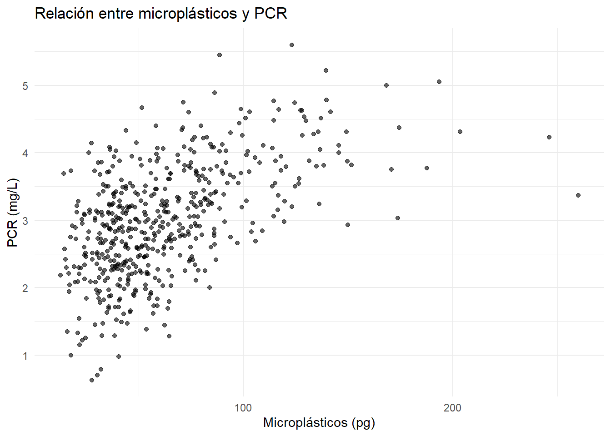
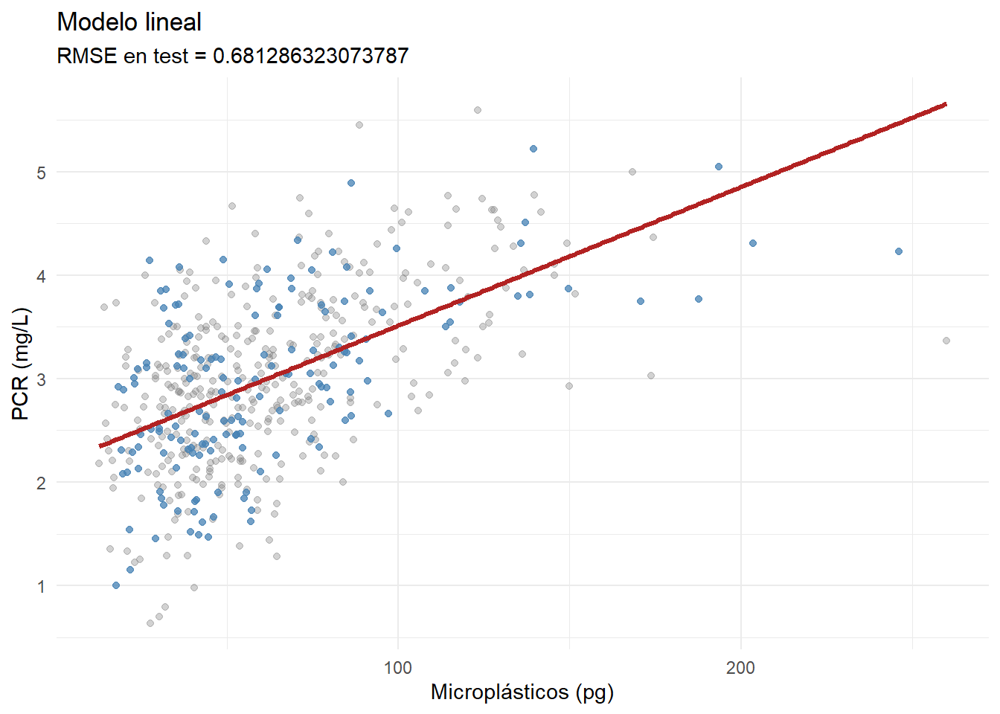
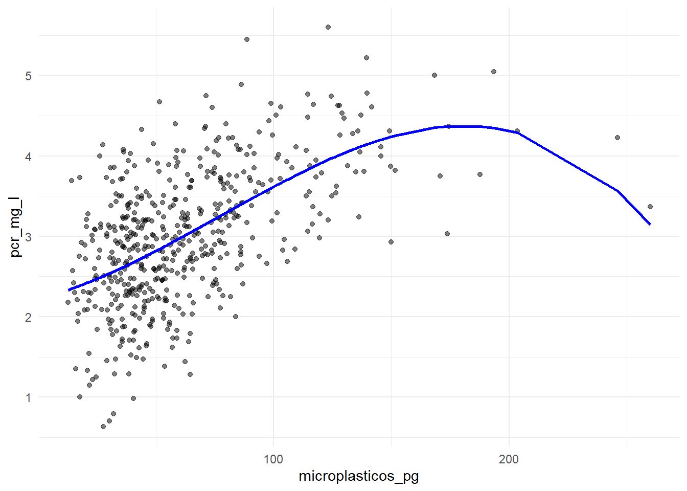
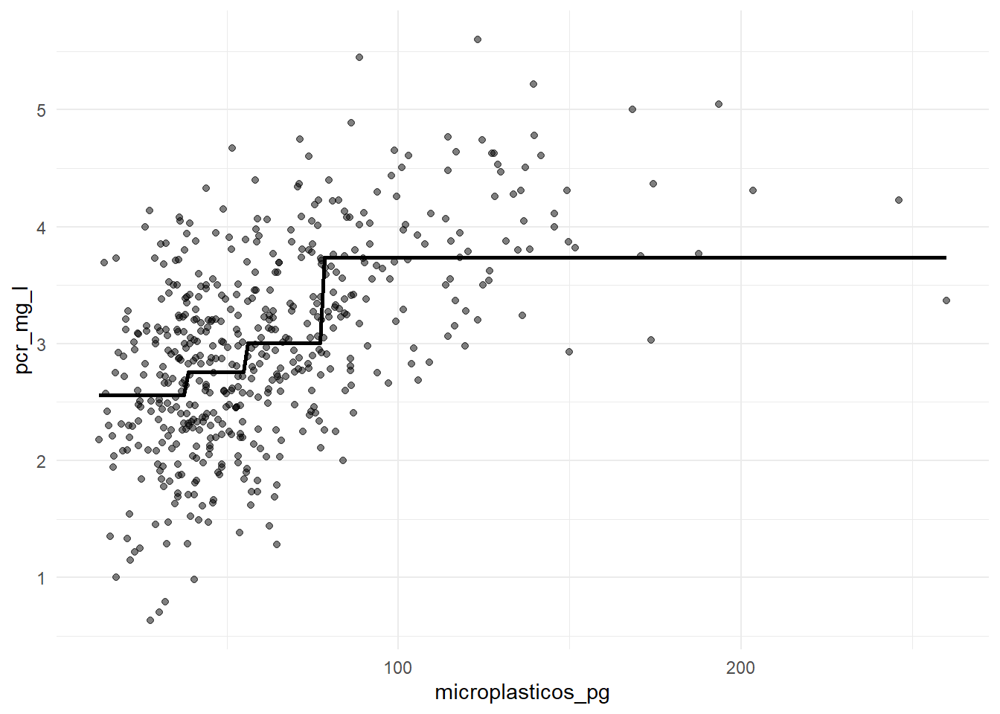
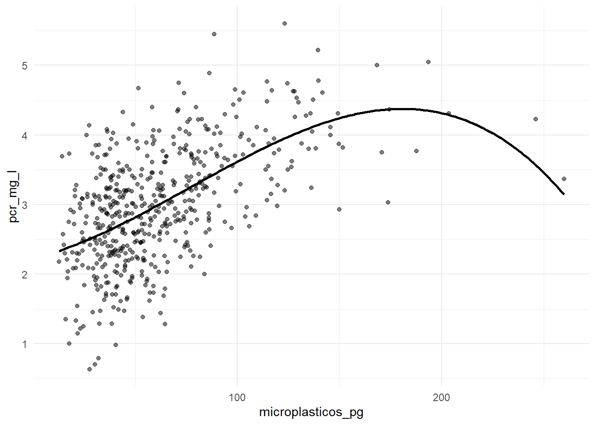
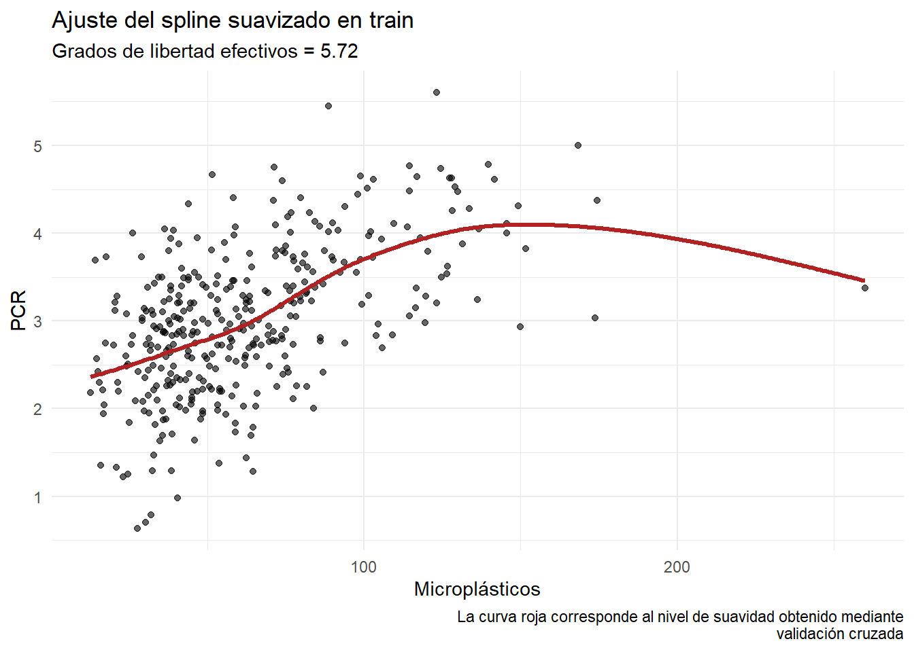
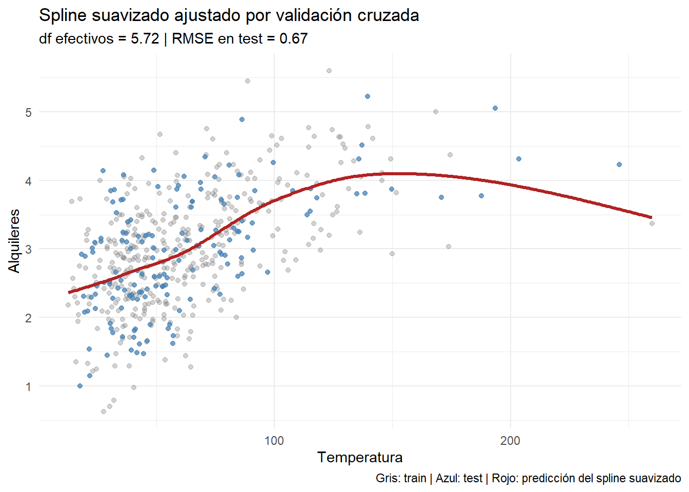

library(tidyverse)
library(splines)
library(mgcv)
theme_set(theme_minimal())Taller 4: Más allá de la linealidad
Objetivo del taller
En este taller estudiaremos la relación entre la exposición simulada a microplásticos y un biomarcador inflamatorio en salud humana. La pregunta principal es si esta relación puede describirse razonablemente mediante una recta o si necesitamos modelos más flexibles para capturar una posible relación no lineal.
Trabajaremos solo con dos variables:
microplasticos_pg: concentración simulada de microplásticos, expresada como partículas por gramo de muestra biológica.pcr_mg_l: proteína C reactiva ultrasensible simulada, medida en mg/L.
Compararemos cinco enfoques:
- Modelo lineal.
- Regresión polinómica.
- Funciones escalonadas.
- Splines de regresión.
- Splines suavizados.
Para comparar los modelos, dividiremos los datos en un conjunto de entrenamiento y un conjunto de prueba. El rendimiento predictivo se evaluará mediante el RMSE. Cuanto menor sea el RMSE, mejores serán las predicciones en el conjunto de prueba.
Organización del trabajo
El taller está pensado para realizarse en grupos de tres personas durante aproximadamente 50 minutos. Parte del código ya está preparado para que podáis centraros en ejecutar, interpretar, comparar modelos y redactar conclusiones.
Al final del taller debéis entregar el documento renderizado en HTML y el archivo .qmd completado.
No es necesario escribir respuestas largas. Priorizad comentarios breves, claros y conectados con los resultados obtenidos.
Puntuación
| Apartado | Contenido | Puntuación |
|---|---|---|
| 1 | Exploración inicial y descripción de la relación observada | 1.50 |
| 2 | Separación entrenamiento/prueba y modelo lineal de referencia | 1.50 |
| 3 | Regresión polinómica | 1.50 |
| 4 | Funciones escalonadas | 1.25 |
| 5 | Splines de regresión | 1.50 |
| 6 | Splines suavizados | 1.50 |
| 7 | Comparación final e interpretación global | 1.25 |
| Total | 10.00 |
Librerías
Carga de datos
datos <- read_csv("microplasticos_salud.csv", show_col_types = FALSE)
glimpse(datos)Rows: 520
Columns: 11
$ id <chr> "P001", "P002", "P003", "P004", "P005", "P006", "P00…
$ edad <dbl> 58, 50, 26, 34, 50, 19, 45, 67, 32, 51, 18, 57, 31, …
$ sexo <chr> "Hombre", "Hombre", "Hombre", "Hombre", "Mujer", "Ho…
$ imc <dbl> 21.6, 28.8, 22.6, 25.3, 22.2, 27.3, 22.7, 27.4, 23.2…
$ fuma <chr> "No", "No", "No", "No", "No", "No", "No", "Sí", "No"…
$ actividad <chr> "Media", "Media", "Media", "Alta", "Alta", "Media", …
$ ultraprocesados <dbl> 6.5, 5.8, 6.5, 4.4, 7.1, 4.9, 4.6, 4.3, 9.4, 6.2, 0.…
$ agua_embotellada <dbl> 4.2, 1.8, 3.5, 4.6, 3.4, 3.8, 4.0, 5.4, 4.7, 3.6, 3.…
$ microplasticos_pg <dbl> 57.2, 54.5, 17.6, 61.5, 78.3, 114.5, 187.7, 68.8, 58…
$ pcr_mg_l <dbl> 2.96, 2.58, 1.00, 2.03, 3.05, 3.06, 3.77, 3.97, 1.83…
$ sintomas <dbl> 33.8, 29.4, 29.2, 26.6, 32.2, 32.0, 43.4, 31.6, 34.5…Aunque el conjunto de datos contiene varias variables, en este taller solo usaremos microplasticos_pg como predictor y pcr_mg_l como variable respuesta.
1. Exploración inicial de los datos
Cread un conjunto de datos reducido que contenga únicamente el predictor microplasticos_pg y la variable respuesta pcr_mg_l. A continuación, realizad un resumen descriptivo de ambas variables y describid la relación observada entre ellas.
Nota
En vuestra respuesta, comentad la forma general de la nube de puntos, si la relación parece aproximadamente lineal o no lineal, si hay zonas donde la respuesta cambia más rápidamente y si se observan valores atípicos o patrones destacables.
Respuesta
datos_reducidos <- datos %>%
select(microplasticos_pg, pcr_mg_l)
summary(datos_reducidos) microplasticos_pg pcr_mg_l
Min. : 12.60 Min. :0.630
1st Qu.: 38.00 1st Qu.:2.417
Median : 53.90 Median :2.980
Mean : 62.42 Mean :3.000
3rd Qu.: 77.60 3rd Qu.:3.567
Max. :260.00 Max. :5.600 ggplot(datos_reducidos, aes(x = microplasticos_pg, y = pcr_mg_l)) +
geom_point(alpha = 0.6) +
labs(
title = "Relación entre microplásticos y PCR",
x = "Microplásticos (pg)",
y = "PCR (mg/L)"
)
La nube de puntos muestra, en general, una tendencia positiva, a medida que aumenta en valor de microplásticos también lo hacen los valores en la PCR. Vemos que la relación entre ambas variables no es lineal; al inicio los valores de PCR aumentan de forma clara, no obstante, a partir de valores de microplásticos de 125 pg los de PCR parecen estabilizarse.
La respuesta cambia más drásticamente a partir de valores de entre 60pg y 70pg, la pendiente de la curva aumenta. En cambio, en valores más pequeños la pendiente es menor y en valores más grandes tiende a aplanarse e incluso disminuir al sobrepasar los 200pg. Observamos que la cantidad de datos va disminuyendo a medida que aumentan los valores de microplásticos. Además, al inicio observamos una gran dispersión de los datos con valores de PCR de menos de 1mg/L y valores de casi 5mg/L.
2. Separación en entrenamiento y prueba y modelo lineal de referencia
Separad los datos en un conjunto de entrenamiento y un conjunto de prueba. Usaremos el 70% de las observaciones para entrenar los modelos y el 30% restante para evaluar su rendimiento predictivo.
Después, ajustad un modelo lineal simple de la forma:
\[ \texttt{pcr\_mg\_l} = \beta_0 + \beta_1\,\texttt{microplasticos\_pg} + \varepsilon. \]
Nota
Responded a las siguientes cuestiones:
¿Cuántas observaciones hay en el conjunto de entrenamiento y en el conjunto de prueba?
¿El coeficiente asociado a
microplasticos_pges positivo o negativo? Interpretad dicho coeficiente en el contexto del problema.¿Qué RMSE obtiene el modelo lineal en el conjunto de prueba?
Teniendo en cuenta el gráfico, ¿una recta parece suficiente para describir la relación observada?
Respuesta
set.seed(3299)
n <- nrow(datos)
train_id <- sample(1:n, size = round(0.7 * n))
train <- datos[train_id, ]
test <- datos[-train_id, ]
# apartado a)
nrow(train)[1] 364nrow(test)[1] 156# Modelo lineal
modelo_lineal <- lm(pcr_mg_l ~ microplasticos_pg, data = train)
summary(modelo_lineal)
Call:
lm(formula = pcr_mg_l ~ microplasticos_pg, data = train)
Residuals:
Min 1Q Median 3Q Max
-2.28913 -0.44202 0.03715 0.47060 2.08846
Coefficients:
Estimate Std. Error t value Pr(>|t|)
(Intercept) 2.173873 0.078708 27.62 <2e-16 ***
microplasticos_pg 0.013405 0.001108 12.10 <2e-16 ***
---
Signif. codes: 0 '***' 0.001 '**' 0.01 '*' 0.05 '.' 0.1 ' ' 1
Residual standard error: 0.7048 on 362 degrees of freedom
Multiple R-squared: 0.2879, Adjusted R-squared: 0.2859
F-statistic: 146.3 on 1 and 362 DF, p-value: < 2.2e-16# Predicciones y RMSE
pred <- predict(modelo_lineal, newdata = test)
#apartado c)
rmse <- sqrt(mean((test$pcr_mg_l - pred)^2))
rmse[1] 0.6812863Respuestas:
a) Hay 364 observaciones en el conjunto de entrenamiento y 156 observaciones en el conjunto de test.
b) El coeficiente asociado a microplasticos_pg es positivo. Es decir, al aumentar la concentración de microplásticos, también aumenta la concentración de PCR. En el contexto del problema, esto implica que una mayor exposición a microplásticos podría estar asociada con una mayor concentración de proteína C.
c) 0.6812863
d)
# predicciones del modelo lineal (no hace falta para la línea)
pcr_pred <- predict(modelo_lineal, newdata = test)
# grid correcto: la variable explicativa es microplasticos_pg
grid_lin <- data.frame(
microplasticos_pg = seq(min(train$microplasticos_pg),
max(train$microplasticos_pg),
length.out = 400)
)
# predicción sobre la grid
grid_lin$pcr_pred <- predict(modelo_lineal, newdata = grid_lin)
# gráfico coherente con el modelo
ggplot() +
geom_point(data = train,
aes(x = microplasticos_pg, y = pcr_mg_l),
alpha = 0.35, color = "grey50") +
geom_point(data = test,
aes(x = microplasticos_pg, y = pcr_mg_l),
alpha = 0.75, color = "steelblue") +
geom_line(data = grid_lin,
aes(x = microplasticos_pg, y = pcr_pred),
linewidth = 1.2,
color = "firebrick") +
labs(
title = "Modelo lineal",
subtitle = paste("RMSE en test =", rmse),
x = "Microplásticos (pg)",
y = "PCR (mg/L)"
) +
theme_minimal()
3. Regresión polinómica
Ajustad modelos de regresión polinómica usando microplasticos_pg como único predictor de pcr_mg_l. Probad polinomios de grados 1, 2, 3, 4 y 5.
Nota
Comentad qué grado polinómico obtiene el menor RMSE. Comparadlo con el RMSE del modelo lineal. ¿La regresión polinómica mejora el ajuste? ¿La curva obtenida parece razonable o presenta oscilaciones poco interpretables?
Respuesta
grados <- 1:5
rmse_poly <- numeric(length(grados))
for (g in grados) {
modelo <- lm(pcr_mg_l ~ poly(microplasticos_pg, g), data = train)
pred <- predict(modelo, newdata = test)
rmse_poly[g] <- sqrt(mean((test$pcr_mg_l - pred)^2))
}
rmse_poly [1] 0.6812863 0.6722586 0.6708375 0.6762659 0.6871194#viasualizamos
mejor_g <- which.min(rmse_poly)
mejor_g #me da el 3, bien, coincide[1] 3modelo_mejor <- lm(pcr_mg_l ~ poly(microplasticos_pg, mejor_g), data = train)
ggplot(datos, aes(x = microplasticos_pg, y = pcr_mg_l)) +
geom_point(alpha = 0.5) +
geom_line(aes(y = predict(modelo_mejor, newdata = datos)),linewidth = 1, color = "blue")
Como podemos ver en la primera parte del codigo de este ejercicio y confirmamos en la segunda parte, el grado que nos hace obtener un rmse menor es el grado 3.
Gracias a la nube de puntos podemos ver una ligera tendencia, dicha tendencia no es lineal ya que hay datos, sobre todo situados a la derecha, que nos sugieren una ligera curvatura. A pesar de que al principio de la curva se presenta bastante variabilidad de los datos, aún así podemos apreciar una curvatura que con una recta no la tendriamos en cuenta y perderiamos ajuste e información.
4. Funciones escalonadas
Ajustad modelos mediante funciones escalonadas. En este enfoque, el rango de microplasticos_pg se divide en intervalos y el modelo estima una media distinta de pcr_mg_l para cada intervalo. Probad modelos con 3, 4, 5 y 6 intervalos.
Nota
Indicad cuántos intervalos obtiene el menor RMSE. Comparad el resultado con el modelo lineal y con el mejor polinomio. ¿El modelo escalonado describe bien la relación observada? ¿Qué problema interpretativo puede tener este tipo de modelo?
Respuesta
# 3,4,5,6
rmse_step <- numeric(4)
for (j in 3:6) {
# dividimos el predictor en j intervalos usando solo el entrenamiento
cortes <- quantile(train$microplasticos_pg, probs = seq(0, 1, length.out = j + 1))
train$intervalo <- cut(train$microplasticos_pg,
breaks = cortes,
include.lowest = TRUE)
test$intervalo <- cut(test$microplasticos_pg,
breaks = cortes,
include.lowest = TRUE)
modelo_step <- lm(pcr_mg_l ~ intervalo, data = train)
pred <- predict(modelo_step, newdata = test)
rmse_step[j - 2] <- sqrt(mean((test$pcr_mg_l - pred)^2)) # esta desplazado, por eso luego sumamos 2
}
rmse_step # intervalos del 3 al 6[1] 0.7178106 0.7076027 0.7016931 0.6979123which.min(rmse_step)[1] 4# viasualizar
mejor_j <- which.min(rmse_step)
cortes_mejor <- quantile(train$microplasticos_pg,
probs = seq(0, 1, length.out = mejor_j + 1))
train$intervalo <- cut(train$microplasticos_pg,
breaks = cortes_mejor,
include.lowest = TRUE)
modelo_mejor_step <- lm(pcr_mg_l ~ intervalo, data = train)
# Pred para dibujar la funcio escalonada
grid <- data.frame(microplasticos_pg = seq(min(datos$microplasticos_pg),
max(datos$microplasticos_pg),
length.out = 200))
grid$intervalo <- cut(grid$microplasticos_pg,
breaks = cortes_mejor,
include.lowest = TRUE)
grid$pred <- predict(modelo_mejor_step, newdata = grid)
ggplot(datos, aes(x = microplasticos_pg, y = pcr_mg_l)) +
geom_point(alpha = 0.5) +
geom_line(data = grid, aes(y = pred), linewidth = 1)
Como podemos ver el numero de intervalos que nos hacen obtener el menor rmse es con 4 invervalos.
No especialmente, ya que presenta bastante variabilidad y hay datos que no se recogen bien con este sistema. Ya que como el rmse no es mejor que con el modelo lineal ni el polinomico, esta nueva division por tramos no mejora la capacidad predictiva.
Las funciones constantes por tramos nos esta haciendo perder informacion importante. Además, de introducir discontinuidades artificiales en los puntos de corte, de modo que dos muestras muy parecidas pueden caer en intervalos diferentes.
5. Splines de regresión
Ajustad modelos mediante splines de regresión usando distintos valores de grados de libertad (df). Probad df = 3, 4, 5, 6, 7. Comparad el RMSE en el conjunto de prueba y representad gráficamente el mejor modelo.
Nota
Indicad qué valor de df obtiene el menor RMSE. Comparad el spline de regresión con el modelo lineal, el mejor polinomio y la mejor función escalonada. ¿La curva parece suficientemente flexible? ¿Se mantiene suave en todo el rango del predictor?
Respuesta
df_vals <- 3:7
rmse_spline <- numeric(length(df_vals))
for (i in seq_along(df_vals)) {
df <- df_vals[i]
modelo <- lm(pcr_mg_l ~ bs(microplasticos_pg, df = df), data = train)
pred <- predict(modelo, newdata = test)
rmse_spline[i] <- sqrt(mean((test$pcr_mg_l - pred)^2))
}
rmse_spline[1] 0.6708375 0.6712921 0.6690714 0.6841837 0.6849061df_vals[which.min(rmse_spline)] - 2 # porque esta desplazado 2[1] 3mejor_df <- df_vals[which.min(rmse_spline)] - 2
modelo_mejor <- lm(pcr_mg_l ~ bs(microplasticos_pg, df = mejor_df), data = train)
grid <- data.frame(
microplasticos_pg = seq(min(datos$microplasticos_pg),
max(datos$microplasticos_pg),
length.out = 200)
)
grid$pred <- predict(modelo_mejor, newdata = grid)
ggplot(datos, aes(x = microplasticos_pg, y = pcr_mg_l)) +
geom_point(alpha = 0.5) +
geom_line(data = grid, aes(y = pred), linewidth = 1)
Hemos visto que el valor de ‘df’ con el que se obtiene menor RMSE, 0’6697014, es 3.
Comparándolo con modelos anteriores, vemos que es mejor que el modelo lineal y la función escalonada, el error es menor. En cambio, es similar a usar el mejor polinomio, pues en este caso coinciden al obtener el grado, que es 3.
La curva parece lo suficientemente flexible como para capturar la tendencia general de los datos y se mantiene suave, como podemos observar, pues no hay saltos bruscos.
6. Splines suavizados
Ajustad modelos mediante splines suavizados usando mgcv::gam(). Probad varios valores de k, que controla la dimensión máxima de la base del suavizado. El valor efectivo de complejidad lo decide el modelo, pero k establece un límite superior a esa complejidad.
Nota
Indicad qué valor de k obtiene el menor RMSE. Comentad también el valor de edf: ¿la curva efectiva es muy simple o bastante flexible? Comparad el resultado con los modelos anteriores. ¿El spline suavizado logra un buen equilibrio entre flexibilidad y suavidad?
Respuesta
# Ajuste del spline suavizado usando validación cruzada
mod_ss <- smooth.spline(
x = train$microplasticos_pg,
y = train$pcr_mg_l,
cv = TRUE
)
mod_ssCall:
smooth.spline(x = train$microplasticos_pg, y = train$pcr_mg_l,
cv = TRUE)
Smoothing Parameter spar= 1.082358 lambda= 0.004130969 (14 iterations)
Equivalent Degrees of Freedom (Df): 5.717773
Penalized Criterion (RSS): 141.4677
PRESS(l.o.o. CV): 0.4832174# reprensetacion datos de entrenamiento
grid_micro_ss <- tibble(
microplasticos_pg = seq(min(train$microplasticos_pg),
max(train$microplasticos_pg), length.out = 400))
pred_ss_train <- tibble(
microplasticos_pg = grid_micro_ss$microplasticos_pg,
pcr_pred = predict(mod_ss, x = grid_micro_ss$microplasticos_pg)$y
)
ggplot() +
geom_point(data = train, aes(x = microplasticos_pg, y = pcr_mg_l), alpha = 0.6) +
geom_line(
data = pred_ss_train,
aes(x = microplasticos_pg, y = pcr_pred),
linewidth = 1.2,
color = "firebrick"
) +
labs(
title = "Ajuste del spline suavizado en train",
subtitle = paste("Grados de libertad efectivos =", round(mod_ss$df, 2)),
x = "Microplásticos",
y = "PCR",
caption = "La curva roja corresponde al nivel de suavidad obtenido mediante
validación cruzada") +
theme_minimal()
# Evaluamos en el conjunto de prueba.
rmseF <- function(obs, pred) {
sqrt(mean((obs - pred)^2))
}
pred_ss_test <- predict(mod_ss, x = test$microplasticos_pg)$y
rmse_ss <- rmseF(test$pcr_mg_l, pred_ss_test)
rmse_ss[1] 0.6730961Finalmente, representamos el ajuste elegido junto con los datos de train y test
#visiaulitzam
ggplot() +
geom_point(data = train, aes(microplasticos_pg, pcr_mg_l), alpha = 0.35, color = "grey50") +
geom_point(data = test, aes(microplasticos_pg, pcr_mg_l), alpha = 0.75, color = "steelblue") +
geom_line(
data = pred_ss_train,
aes(microplasticos_pg, pcr_pred),
linewidth = 1.2,
color = "firebrick"
) +
labs(
title = "Spline suavizado ajustado por validación cruzada",
subtitle = paste(
"df efectivos =", round(mod_ss$df, 2),
"| RMSE en test =", round(rmse_ss, 2)
),
x = "Temperatura",
y = "Alquileres",
caption = "Gris: train | Azul: test | Rojo: predicción del spline suavizado"
) +
theme_minimal()
Nuestro modelo obtiene 5 grados de flexibilidad efectiva, lo que indica que la curva es bastante suave. El RMSE en el conjunto test es 0.6730961. La curva obtenida con el spline suavizado parece capturar bien la relación no lineal entre microplásticos y PCR, adaptándose a los datos de forma correcta y con una forma muy similar a la anterior. Pese a que captura una buena relación entre flexibilidad y suavidad, en cuanto a la interpretabilidad nos podría resultar más complicado que en los casos anteriores cosa que nos podría dificultar el trabajar con este modelo.
Sería una buena opción intentar valorar utillizar otros modelos que tengan un rmse ligeramente superior a cambio de un aumento considerable en la interpretabilidad.
7. Comparación final de modelos
Completad la comparación final reuniendo el mejor resultado de cada familia de modelos. Después, redactad una conclusión global sobre qué modelo elegiríais y por qué.
Nota
Redactad una conclusión final de entre 8 y 12 líneas. La conclusión debe responder a estas preguntas:
- ¿Qué modelo obtiene el menor RMSE?
- ¿Ese modelo también parece razonable desde el punto de vista gráfico?
- ¿La relación entre microplásticos y PCR parece lineal o no lineal?
- ¿Qué método elegiríais si buscáis un equilibrio entre buena predicción e interpretabilidad?
- ¿Qué limitaciones tiene este análisis al estar basado en datos simulados y en un único predictor?
Respuesta
¿Qué modelo obtiene el menor RMSE?
El modelo que obtiene el menor RMSE es el spline de regresión con un RMSE de 0.6690714.
¿Ese modelo también parece razonable desde el punto de vista gráfico?
Captura la relación no lineal entre microplásticos y PCR de forma suave, ajustándose de forma correcta y bastante precisa a los datos. De hecho, los dos métodos que trabajan con splines obtienen unas gráficas muy similares y un rmse también muy similar.
¿La relación entre microplásticos y PCR parece lineal o no lineal?
La relación entre microplásticos y PCR parece claramente no lineal, ya que las curvas de los últimos modelos se ajustan mejor a los datos que una recta simple.
¿Qué método elegiríais si buscáis un equilibrio entre buena predicción e interpretabilidad?
Probablemente, si buscamos un equilibrio entre buena predicción e interpretabilidad podemos decantarnos por un modelo polinómico con el grado que minimice el RMSE, ya que la diferencia entre los errores es muy pequeña y el aspecto de la iinterpretabilidad lo compensaría.
¿Qué limitaciones tiene este análisis al estar basado en datos simulados y en un único predictor?
Al estar basado en datos simulados, los modelos podrían obteneres peores resultados al trabajar sobre datos reales. Además, como estamos trabajando con un único predictor podría ser más difícil capturar relaciones más complejas muy habituales en situaciones reales, especialmente en ámbitos médicos y aspectos biológicos.